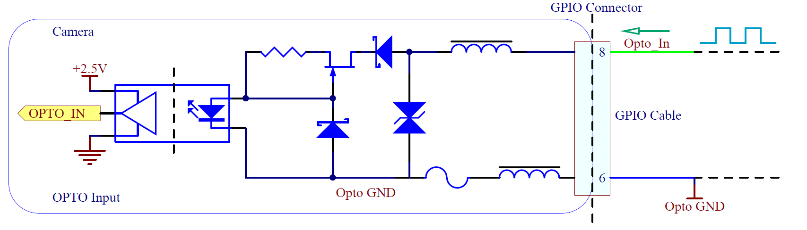
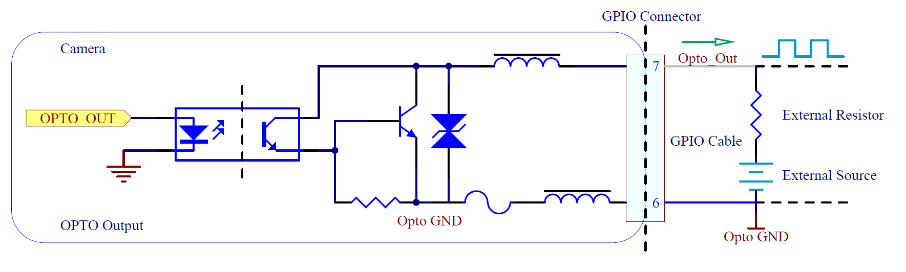
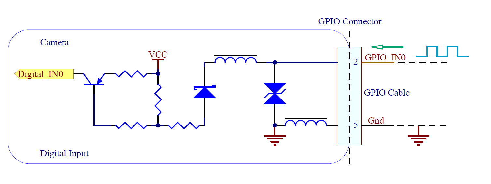
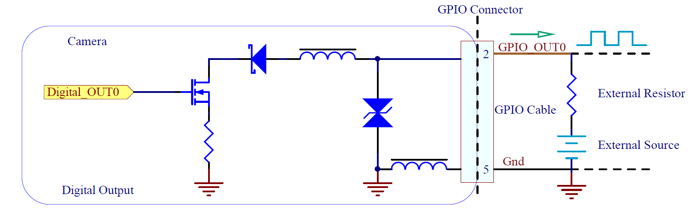

GPIO Schematics¶
Opto-isolated Input – GPIO Line 0¶
{kind=link}
Opto-isolated Input Measurements:
| Voltage (V) | Max Rise Delay (us) | Max Fall Delay (us) | Max Rise Time (us) | Max Fall Time (us) | Min Pulse Input (us) | Min Input High (V) | Min Input Low (V) |
|---|---|---|---|---|---|---|---|
| 2.5 | 1 | 1 | 1 | 1 | 2 | 2.5 | 1.0 |
| 5 | 1 | 1 | 1 | 1 | 2 | 2.5 | 1.0 |
Sample values measured at room temperature. Results may vary over temperature and setup.
Opto-isolated Output – GPIO Line 1¶
{kind=link}
Opto-isolated Output Measurements:
| Voltage (V) | External Resistor (Ω) | Max Rise Delay (us) | Max Fall Delay (us) | Max Rise Time (us) | Max Fall Time (us) | Current (mA) | Low Level (V) |
|---|---|---|---|---|---|---|---|
| 2.5 | 150 | 50 | 5 | 40 | 5 | 5.7 | 0.9 |
| 2.5 | 330 | 50 | 5 | 40 | 5 | 2.9 | 0.8 |
| 2.5 | 560 | 50 | 5 | 40 | 5 | 1.9 | 0.5 |
| 2.5 | 1k | 50 | 5 | 40 | 5 | 1.2 | 0.3 |
| 5 | 330 | 50 | 5 | 50 | 5 | 6.6 | 0.9 |
| 5 | 560 | 50 | 5 | 50 | 5 | 4 | 0.7 |
| 5 | 1k | 50 | 5 | 50 | 5 | 2.4 | 0.5 |
| 5 | 1.8k | 50 | 5 | 50 | 5 | 1.4 | 0.4 |
| 12 | 1k | 50 | 5 | 60 | 5 | 6 | 0.9 |
| 12 | 1.8k | 50 | 5 | 60 | 5 | 3.4 | 0.9 |
| 12 | 2.7k | 50 | 5 | 60 | 5 | 2.4 | 0.7 |
| 12 | 4.7k | 50 | 5 | 60 | 5 | 1.5 | 0.5 |
| 24 | 1.8k | 60 | 5 | 60 | 5 | 7.1 | 0.9 |
| 24 | 2.7k | 60 | 5 | 60 | 5 | 4.7 | 0.9 |
| 24 | 4.7k | 60 | 5 | 60 | 5 | 2.8 | 0.7 |
| 24 | 6.8k | 60 | 5 | 60 | 5 | 2.1 | 0.6 |
Sample values measured at room temperature. Results may vary over temperature and setup.
Non-isolated Input - GPIO Line 2¶
{kind=link}
Non-isolated Input Measurements:
| Voltage (V) | Max Rise Delay (us) | Max Fall Delay (us) | Max Rise Time (us) | Max Fall Time (us) | Min Pulse Input (us) | Min Input High (V) | Min Input Low (V) |
|---|---|---|---|---|---|---|---|
| 2.5 | 1 | 1 | 1 | 1 | 2 | 2.5 | 0.5 |
| 5 | 1 | 1 | 1 | 1 | 2 | 2.5 | 0.5 |
Typical values measured at room temperature. Results may vary over temperature.
Non-isolated Output - GPIO Line 2¶
{kind=link}
Non-isolated Output Measurements:
| Voltage (V) | External Resistor (Ω) | Max Rise Delay (us) | Max Fall Delay (us) | Max Rise Time (us) | Max Fall Time (us) | Current (mA) | Low Level (V) |
|---|---|---|---|---|---|---|---|
| 2.5 | 150 | 0.5 | 0.5 | 1 | 0.5 | 4.3 | 1.3 |
| 2.5 | 330 | 0.5 | 0.5 | 1 | 0.5 | 2.6 | 1 |
| 2.5 | 560 | 0.5 | 0.5 | 1 | 0.5 | 1.8 | 0.8 |
| 2.5 | 1k | 0.5 | 0.5 | 1 | 0.5 | 1.1 | 0.6 |
| 5 | 330 | 0.5 | 0.5 | 1 | 0.5 | 5.6 | 1.4 |
| 5 | 560 | 0.5 | 0.5 | 1 | 0.5 | 3.7 | 1.1 |
| 5 | 1k | 0.5 | 0.5 | 1 | 0.5 | 2.3 | 0.9 |
| 5 | 1.8k | 0.5 | 0.5 | 1 | 0.5 | 1.4 | 0.7 |
| 12 | 1k | 0.5 | 0.5 | 1 | 0.5 | 5.5 | 1.4 |
| 12 | 1.8k | 0.5 | 0.5 | 1 | 0.5 | 3.2 | 0.9 |
| 12 | 2.7k | 0.5 | 0.5 | 1 | 0.5 | 2.3 | 0.9 |
| 12 | 4.7k | 0.5 | 0.5 | 1 | 0.5 | 1.5 | 0.7 |
| 24 | 1.8k | 0.5 | 0.5 | 2 | 0.5 | 6.5 | 1.6 |
| 24 | 2.7k | 0.5 | 0.5 | 2 | 0.5 | 4.5 | 1.3 |
| 24 | 4.7k | 0.5 | 0.5 | 2 | 0.5 | 2.6 | 0.9 |
| 24 | 6.8k | 0.5 | 0.5 | 2 | 0.5 | 1.8 | 0.8 |
Typical values measured at room temperature. Results may vary over temperature.
Non-isolated Input - GPIO Line 3¶
Same as Non-isolated Input – GPIO Line 2 (GPIO_IN is Pin 4, GND is Pin 5)
Non-isolated Output - GPIO Line 3¶
Same as Non-isolated Output – GPIO Line 2 (GPIO_OUT is Pin 4, GND is Pin 5)
{kind=link}